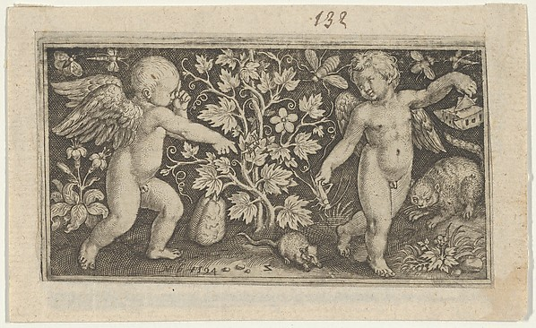

Tap the print.
Engraving, unsigned as far as I can read, probably 17th c.; artist and title unknown to me (inbox, no note). The arrows and the readings of who attends to what are mine, and could be wrong.
Fragments